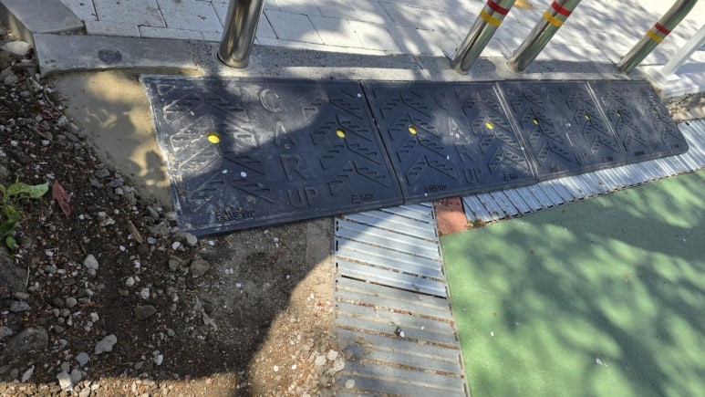
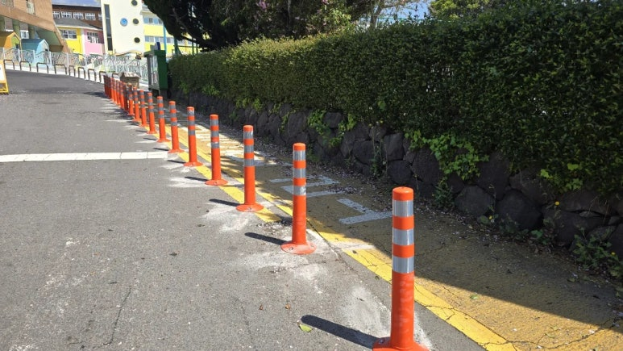
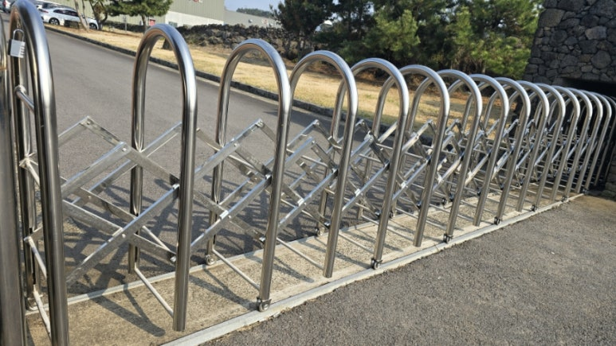
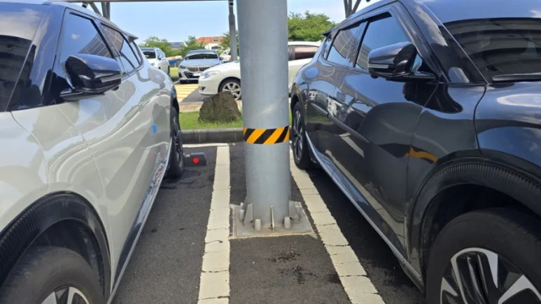
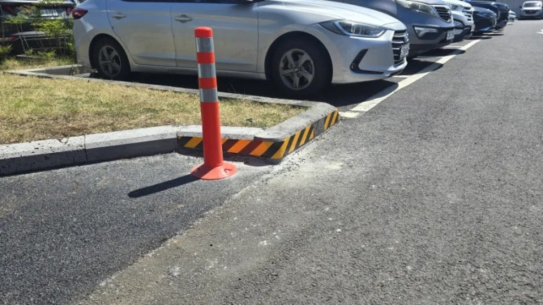

제주 안전시설 시공사례
제주도에서 실제로 해결한 현장 기록입니다. 새로 설치한 시공과 기존 시설을 고친 교체·유지보수를 기록 유형으로 구분해 두었습니다. 분야와 작업 유형을 선택하면 비슷한 시공사례를 쉽게 찾을 수 있습니다.

서귀포시 로터리 차선규제봉 교체
로터리는 진입 차량과 진출 차량이 같은 지점에서 동시에 발생하는 구간입니다. 이곳의 기존 규제봉이 제 기능을 못 하면 중앙선 침범과 불법 유…
사례 자세히 보기 →
제주 진출입로 출차주의등 설치 (미러센서·경광등)
진출입로는 건물에서 나오는 차량과 보도를 지나는 보행자가 만나는 지점입니다. 차량이 나오는 것을 보행자가 미리 알 수 없으면, 서로를 발견하…
사례 자세히 보기 →
단지 내 도로 경계석 철거·재설치 및 아스콘 포장 복구
단지 내 도로의 선형이 좁아 차량이 경계석을 밟고 지나가는 일이 반복되고 있었습니다. 경계석이 계속 하중을 받으면 파손과 이탈로 이어지고, …
사례 자세히 보기 →
학교 출입구 경사로 진입판 설치
보도와 도로 사이에 단차가 있어 통행이 끊기는 구조였습니다. 아이들뿐 아니라 유모차와 휠체어가 지날 때 걸림이 생기고, 차량이 넘어갈 때는 …
사례 자세히 보기 →
서귀포시 초등학교 통학로 시선유도봉 설치
현장을 처음 확인했을 때 차량과 보행자의 동선이 자연스럽게 섞일 수 있는 구조였습니다. 어린이가 매일 이용하는 통학로였기 때문에, 사고가 난…
사례 자세히 보기 →
학교 배수로 중하중 그레이팅 교체
현장을 확인해 보니 바닥 콘크리트에 균열이 여러 곳 있었고, 배수로 주변이 파손·열화된 상태였습니다. 기존 그레이팅은 이 구간에 걸리는 하중…
사례 자세히 보기 →
레일형 스텐 자바라 대문 설치
차량 통행이 잦고 대문의 직선 주행성이 중요한 진입로였습니다. 자바라 대문은 길어질수록 휘어짐이 생기기 쉽고, 강풍이나 경사 조건에서는 개폐…
사례 자세히 보기 →
제주 주차장 기둥 고휘도 반사테이프 부착
주차면 한가운데에 구조물 기둥이 서 있어, 차를 대고 뺄 때 운전자가 기둥을 보지 못하고 차량 측면을 긁는 접촉 사고 위험이 컸습니다. 기둥…
사례 자세히 보기 →
제주 주차장 시선유도봉·경계석 반사 경고도색
주차장 진입 모서리에서 차량 회전 동선과 보행 동선이 구분 없이 겹쳤습니다. 화단 쪽으로 돌출된 경계석은 낮에도 눈에 잘 띄지 않아 차량이 …
사례 자세히 보기 →원문에 기재되지 않은 지역·발주처는 비워 두었습니다. 확인되지 않은 정보를 표기하지 않습니다.